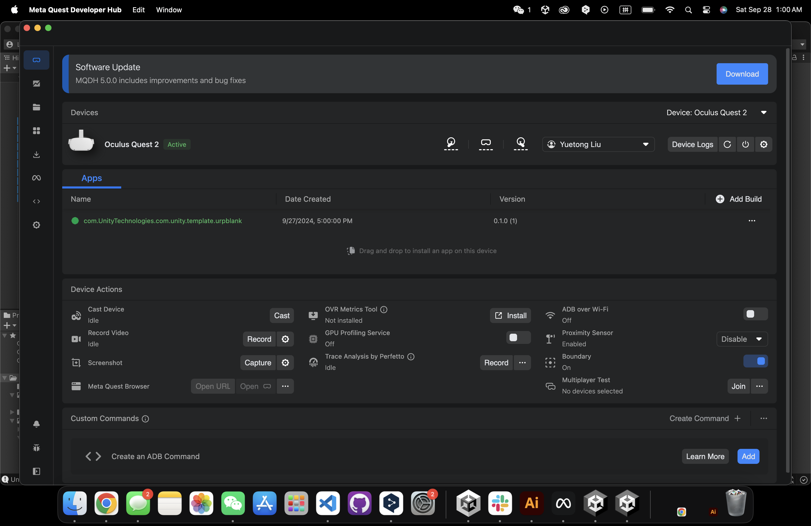

Reference & Inspiration
I hope to build an interactive game in VR where plants can grow from the land by clicking on it.
Results in Unity
First of all, the software I want to use is Unity. I first made a simple terrain, then put the plant prefab into it, added code to the main camera and plants (the VR part will be explained in detail later), and achieved the effect in the video. The direction is controlled by WASD, the rise and fall are controlled by QE, and different plants can be randomly generated by clicking the mouse.
Connect Unity with Meta Quest2
The most critical step is to download the XR Interaction Toolkit (and samples) and XR Plugin Management in the package manager. Then go to File>Build setting and set the data in red circles. Make sure to select the Android system (I am using a MacBook), add the correct scene, select run Quest, and then build and run.
A Simple VR Controller model
I downloaded Meta Quest Developer Hub, where I need to turn on developer mode, connect my headset, and I can see the connection is successful on my device
Then go to the menu, select unknown source, click the link, and you can enter Unity on your computer
Check whether the connection is successful
Coding Part

The camera code is set to control the direction with the left handle.
Add a plant growth speed code to change the scale of the plant.
And the A button of the right handle can generate random plants if clicked on the terrain.

Add the camera and spawner code to the XR Origin (XR Rig), and the growth code to the plant prefab
Final Result
This is how my terrain looks like

And these are what my pink VR controllers look like
Rendering
Some final scenes captured in Meta Quest 2. You can plant colorful trees in the scene.
Final Video
Final project video in VR
Me playing this game